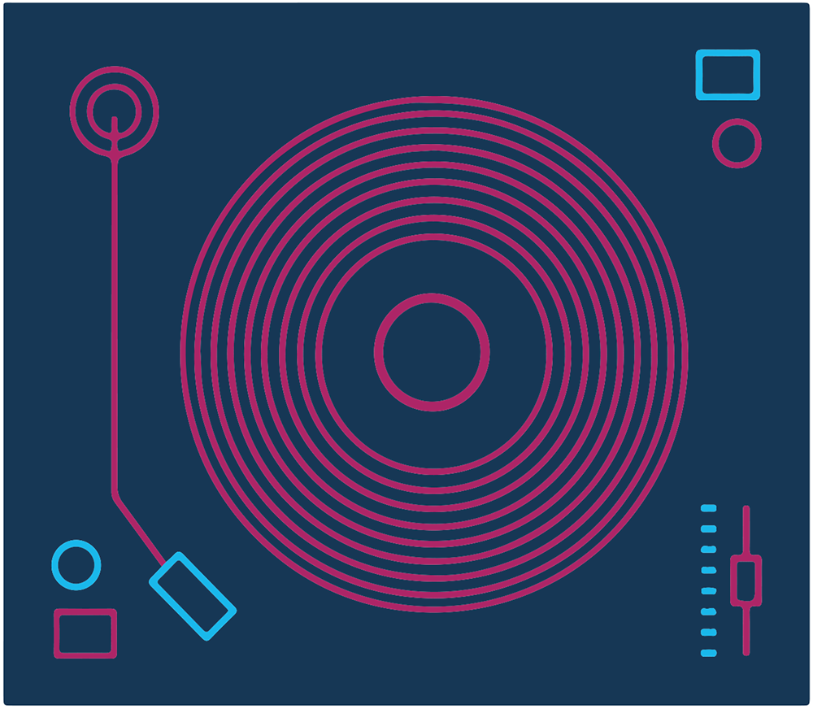
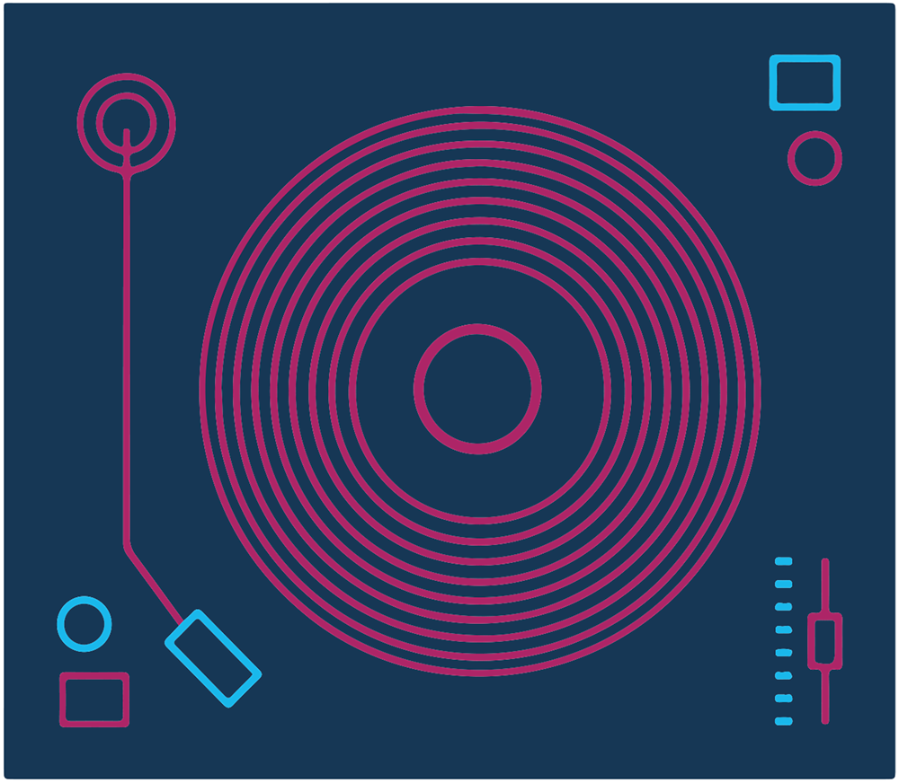

As time passed, DJ Mateusz teamed up with a friend, and together they had thrilling DJing adventures. They attended parties together and DJed, and their experiences helped them grow and learn new skills.
However, DJ Mateusz eventually decided to go solo, marking a big step in his career. Now, his goal is simple: to make every party amazing for his customers. He follows his slogan “Twoja impreza, nasza muzyka,” which translates from Polish to be “Your party, our music.”
DJ Mateusz loves DJing Polish American parties because that’s the culture he grew up in, and that type of music is the reason he fell in love with DJing. At each celebration, he starts the event off with a special tradition: playing the Polish song “Sto Lat,” which celebrate good health and long life. It’s a heartfelt gesture that brings warmth and nostalgia to the celebration. As guests raise their glasses and sing along, the room fills with happiness and friendship, making for unforgettable memories.